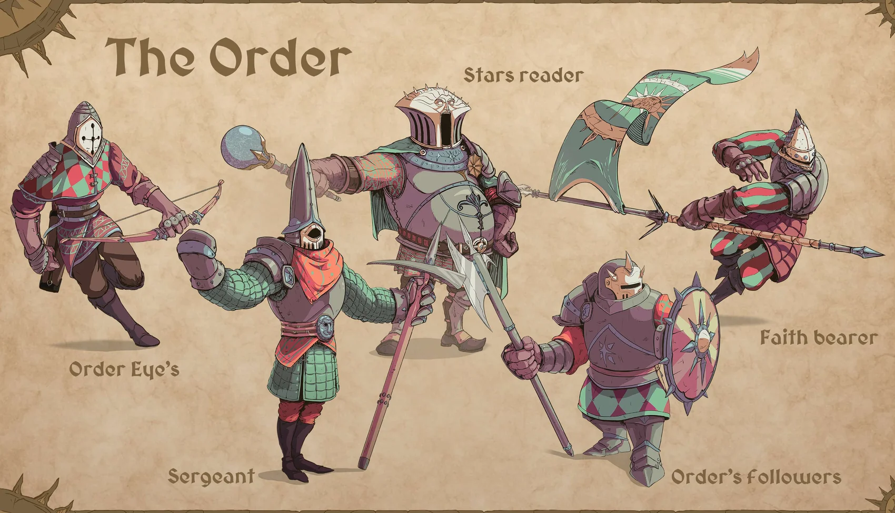
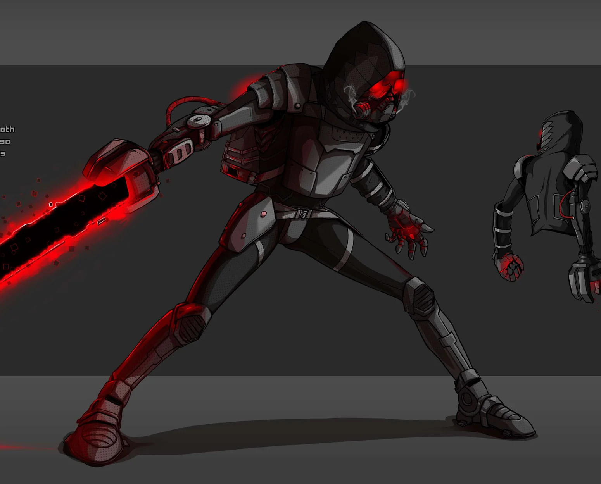
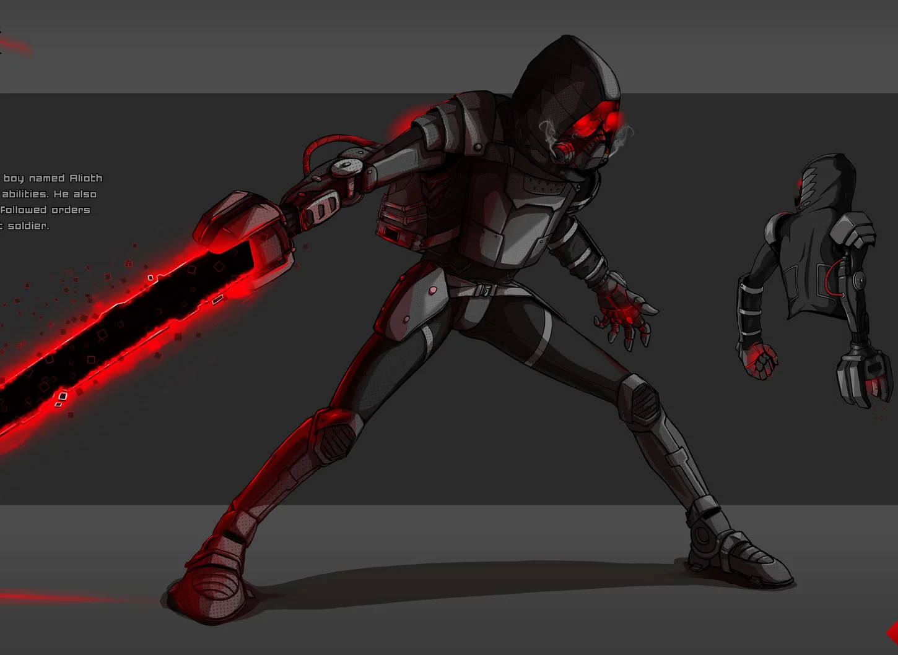
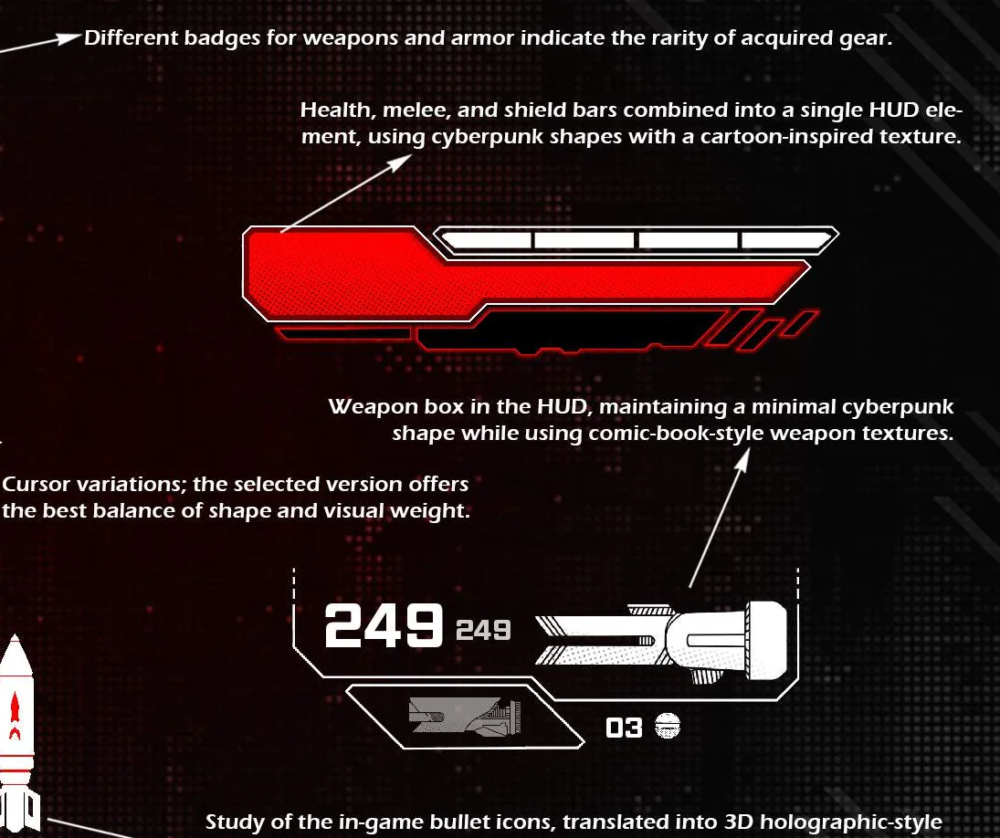
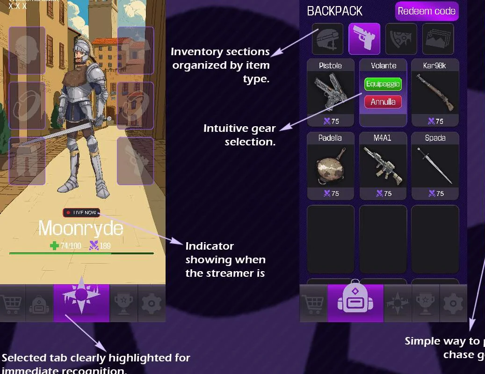
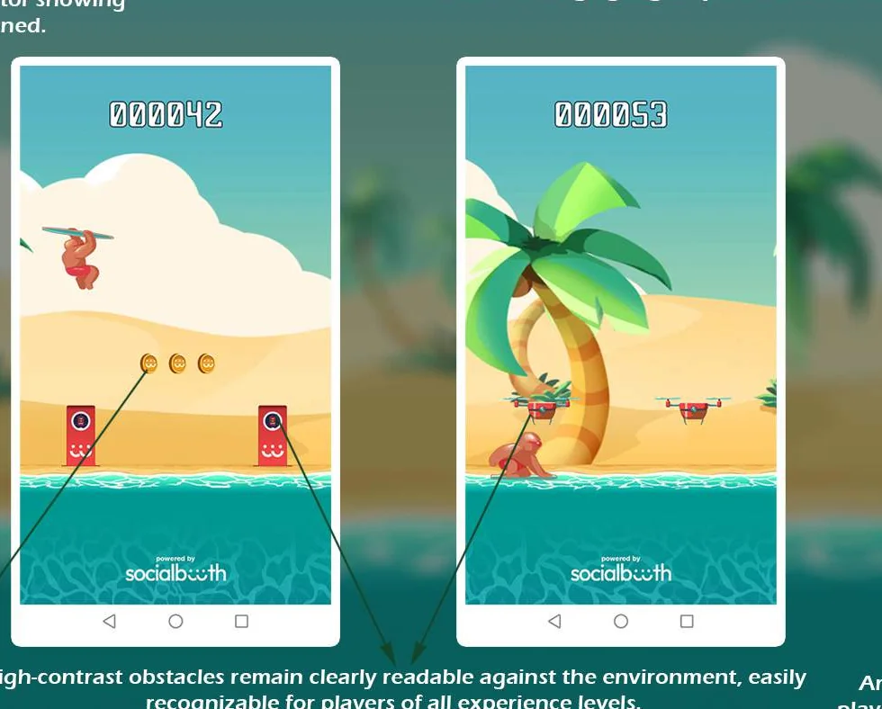
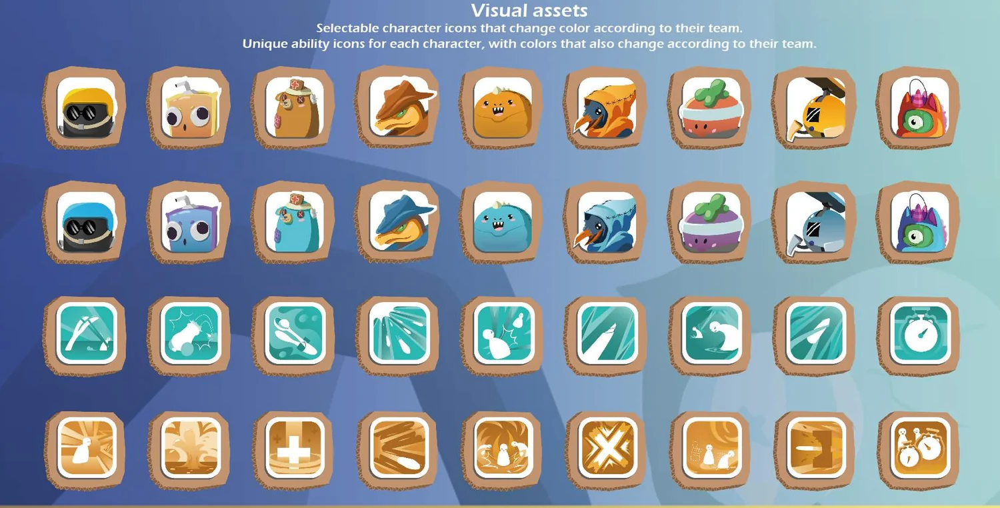

The Order
PERSONAL PROJECT · FANTASYBuilding a cohesive fantasy cast through distinct silhouettes, costumes, weapons and character storytelling.
BASED IN MILAN, ITALY / GAME ART & VISUAL DESIGN
I'm Ciro Di Sabatino, a Game UI Artist & Character Concept Artist. I design visual worlds, memorable characters and readable interfaces for games.

NEGATIVE EDGE CHARACTER DESIGN01 / SELECTED WORK
A focused selection of character concepts, visual explorations and game interfaces. Tap any artwork to inspect the original portfolio page.

Building a cohesive fantasy cast through distinct silhouettes, costumes, weapons and character storytelling.

From silhouette exploration to a production-oriented sci-fi character, with equipment studies and design details.

A comic-book-meets-cyberpunk UI language: high contrast, precise visual hierarchy and a restrained noir palette.

Mobile progression, character customization, inventory, shop and ranking screens built around a Twitch-inspired identity.

A playful browser game for corporate events, designed for instant recognition and clear, accessible interactions.

A cheerful toy-themed interface using cardboard, stickers, custom icons and color-coded turn-based interactions.
WANT THE COMPLETE BREAKDOWN?
02 / ABOUT
My background in Fine Arts and Concept Art shapes the way I approach game production: start with a strong idea, build a consistent visual language, and make every asset serve the experience.
I work across character design, visual development and Game UI, collaborating with designers and developers to turn creative direction into usable game art.
03 / GET IN TOUCH
Looking for a Game UI Artist, Concept Artist or someone who brings both perspectives to the team?
cirodisabatino@gmail.com